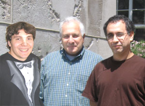
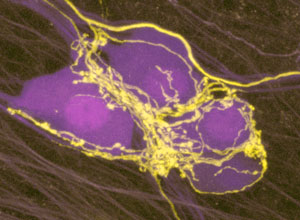

News Archives : 2008 : Watching Synapses Change in Animals
by Jeff Lichtman
June 26, 2008

Some of the authors (left to right): Corey M McCann, Juan Carlos Tapia, and Jeff W Lichtman  Image shows submandibular ganglion neurons (blue) that express Cyan Fluorescent Protein that are contacted by axons of neurons from the brainstem (yellow) that express Yellow Fluorescent protein. These |
|
It is widely assumed that alterations in synaptic connections between nerve cells accounts for the amazing adaptability of our nervous system. These alterations fall into two general categories: first, there are changes in efficacy of synapses that can occur rapidly and reversibly and second, there are changes in the number of synapses that are thought to be long lasting.
The relation between the rapid and long lasting changes is a matter of much speculation but little direct evidence. In this study grad student Corey McCann along with Postdocs Juan Carlos Tapia and Jay Coogan and undergrad Han Kim followed synapses over time in living mice to see whether rapid changes in synaptic efficacy precede long lasting changes in synaptic number.
In transgenic mice that express fluorescent proteins in an accessible population of neurons in the neck (the submandibular ganglion) they showed that they could monitor synaptic sites over time. They then induced rapid synaptic weakening by crushing the sumandibular neuron’s axons and noted over the next 2 days a dramatic decline the number of neurotransmitter receptors at the synaptic sites on these damaged neurons.
One surprising finding was that neurotransmitter receptors at these synapses are constantly turning over at rates that are more than an order of magnitude faster than neurotransmitter receptors at synaptic connections between nerves and muscle fibers. This rapid exchange of neurotransmitter receptors may allow the quick alterations in synaptic strength that occur at synapses between neurons. The same cells were then followed over longer periods of up to several weeks. With time they noted that the synapses disappeared. These studies thus show that rapid changes in synaptic strength are followed by longer lasting changes in synaptic number.
Full Text of Article in Nature Neuroscience (for Harvard Community)